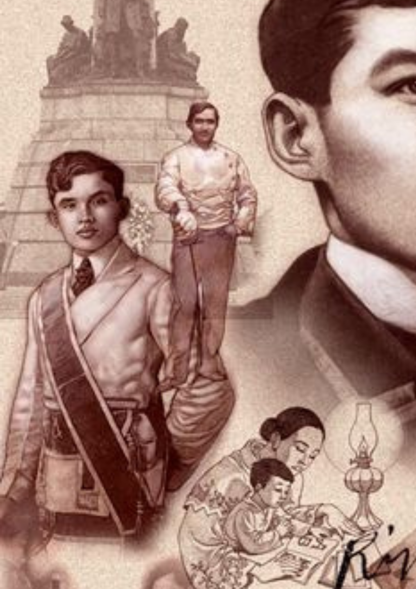
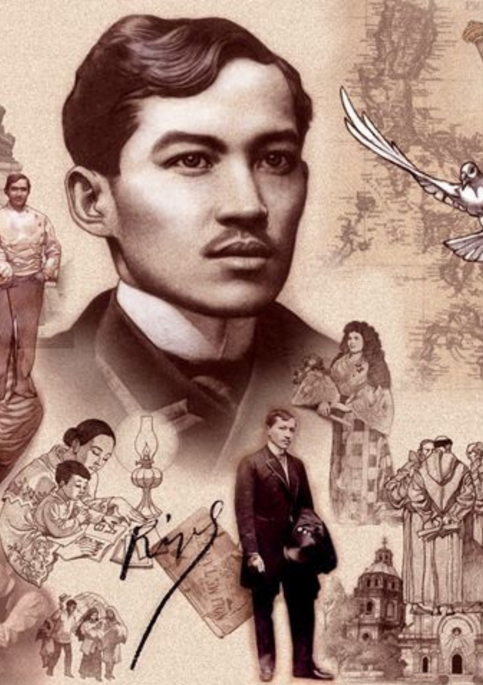
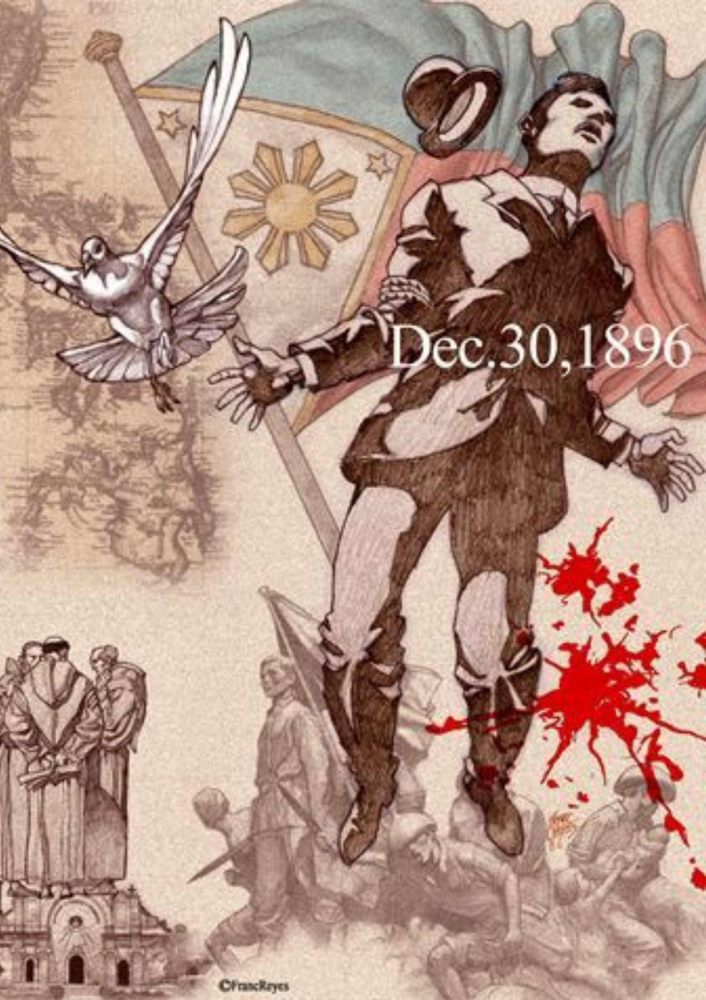

José Protacio Rizal Mercado y Alonso Realonda
Ang Pambansang Bayani



Siya ay pinanganak sa Calamba, Laguna noong Hunyo 19, 1861. Pang-pito siya sa labing-isang magkakapatid at pangalawang lalaki. Ang mga magulang niya ay sina Francisco Engracio Rizal Mercado y Alejandro at Teodora Morales Alonzo Realonda y Quintos. Sa murang edad, kinakitaan na siya ng talino bagama’t maliit siya at hindi kalaksan ang kaniyang katawan, Siya ay lumalaking normal na bata nagmula sa isang pamilyang may kaya.
Kilala siya bilang "Pepe". Ang ina niya ang unang nagturo sa kaniya magbasa, magsulat, magbilang at magdasal. Pinagpatuloy niya sa Madrid, Espanya ang pagaaral ng Medicina at Filosofia y Letras. Kilala siya bilang isang bayani, may-akda, at isang doktor sa mata. Siya ang nagtatag ng La Liga Filipina. Sa Bagumbayan, o kilala ngayon na "Rizal Park", siya nahatulang barilin noong Disyembre 30, 1896. Mi Ultimo Adios ang huling sinulat ni Rizal. Ilan sa mga akda na kanyang naisulat maliban sa Noli me Tangere ay El Filibusterismo , Sa Aking mga Kabata , Ang Una kong Salamisim .